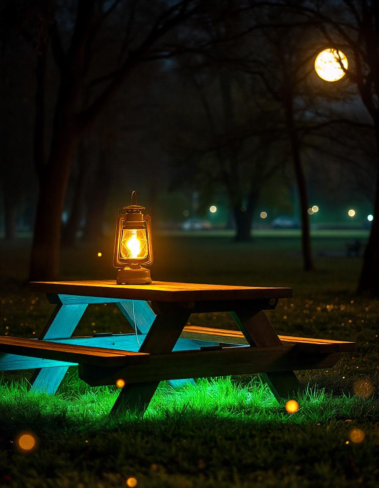
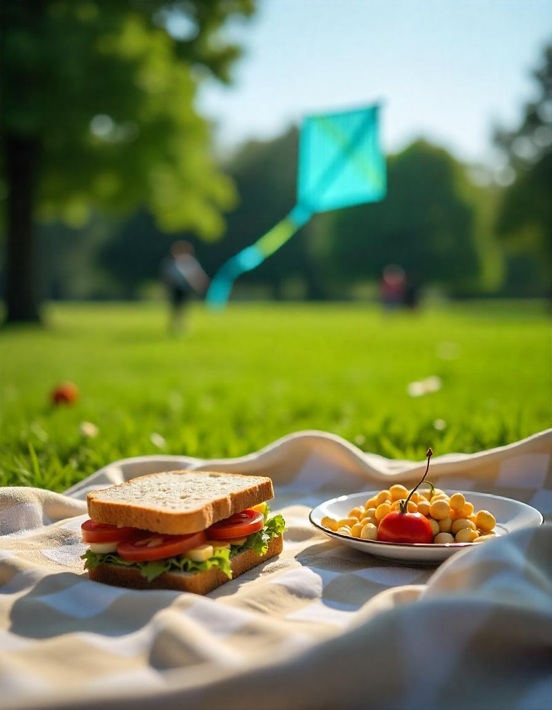
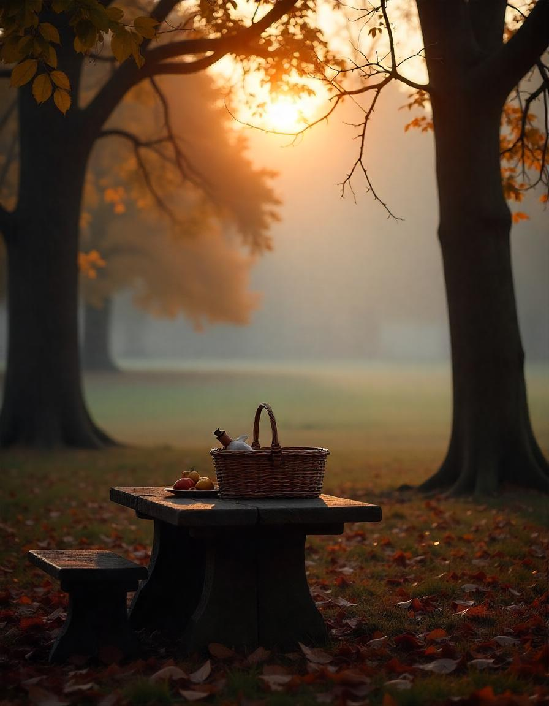
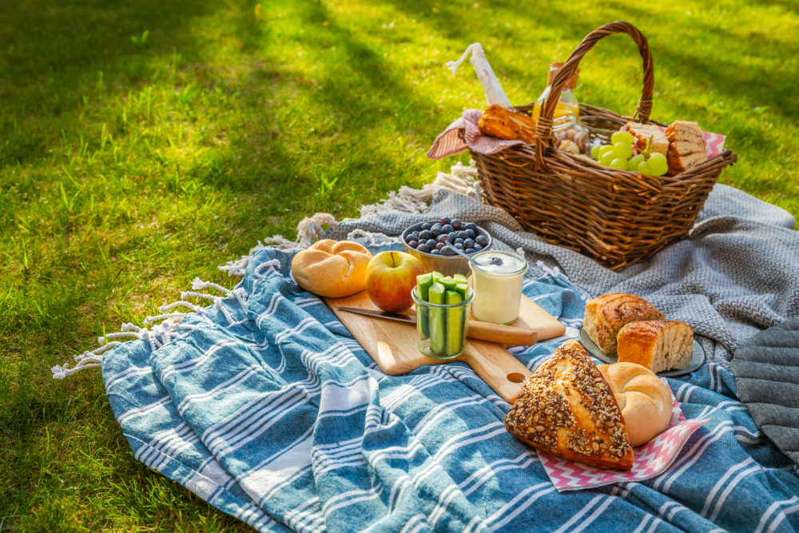
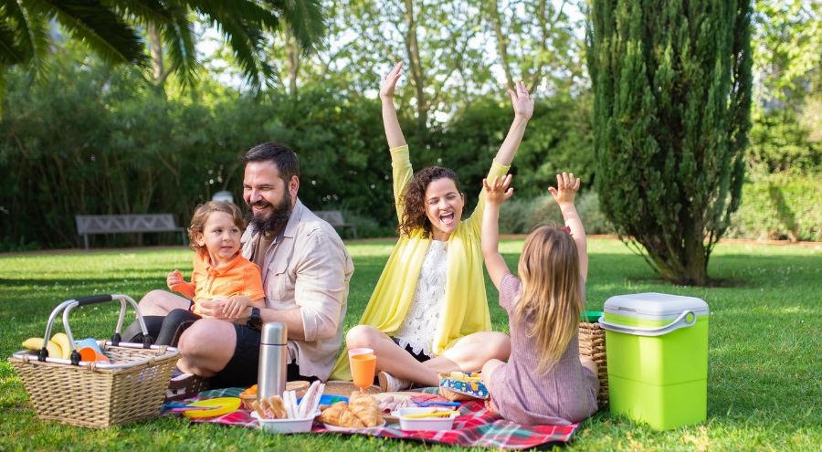
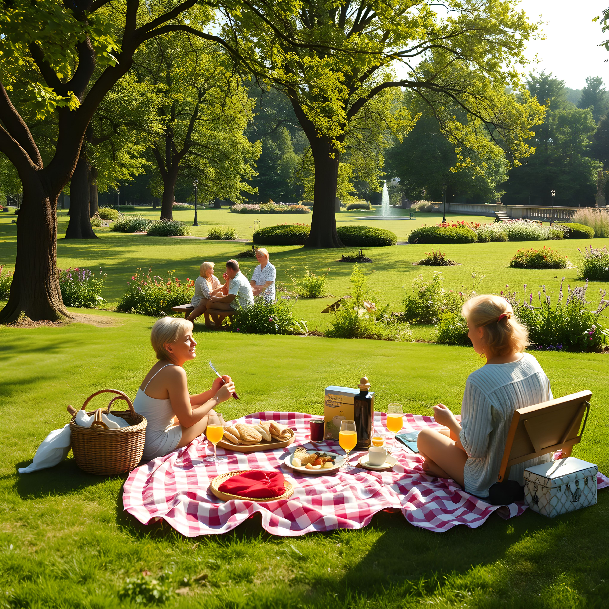
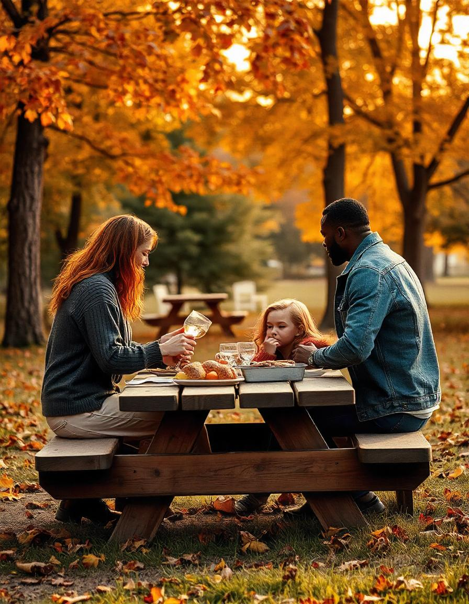

Disfruta de una comida al aire libre rodeado de naturaleza. Disfruta de tu espacio ideal para compartir con familia y amigos
Más información
En El Parque siempre te esperarán eventos y juegos de todo tipo para disfrutar con los tuyos. ¡A qué esperas!
¡Más actividades!
Comer al aire libre en un parque combina naturaleza, aire fresco y relajación, creando una experiencia simple pero revitalizante.
¡Quiero saber más!Lo mejor para un buen picnic, es el Sol.
El sol brilla con calidez, el cielo es un lienzo despejado de azul intenso, y una suave brisa refresca el ambiente sin robar protagonismo a la temperatura ideal. El sonido de los pájaros, la belleza de las flores y el césped verde invita a relajarse. Es el momento perfecto para extender una manta, disfrutar de comida deliciosa y compartir risas. ¡Ven a disfrutar de este clima espectacular!
